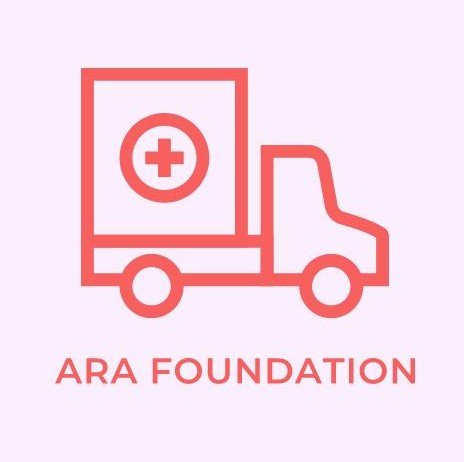
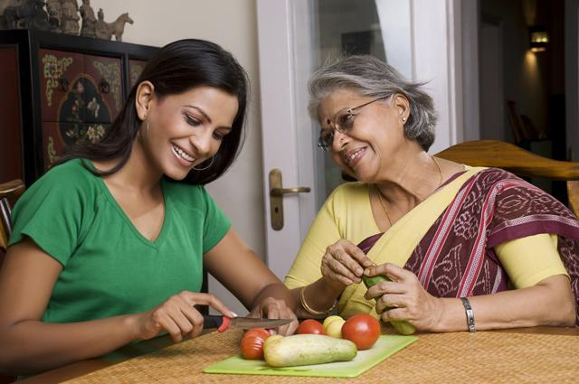

AKROSH COMPANY
the organisation of ARA Foundation for Charity

DAUGHTER GIVING BIRTH TO MOTHER
Donor saves mother’s life, and another….
Mrs Rukhsana Contractor had hepatitis C and her liver was failing. She was jaundiced, her feet were swollen like balloons and she was so tired and drowsy that she would doze off in the middle of a doctor’s appointment. She was listed for a liver transplant but donations were few and far between.
Most patients on the waiting list for a liver would die waiting. She heard about the launch of the liver transplant program at Kokilaben Dhirubhai Ambani Hospital in March 2013 and became aware of the option of living donor liver transplantation. Her daughter, Rukaiya, volunteered to donate part of her liver to her mother and with her husband’s due agreement, the transplant was performed on 21 st March, 2013.
Rukaiya is a physiotherapist who works with children with developmental problems and one of the children she was working with had an unusual problem: Sanvi Sachin Gawde had been born with a condition called biliary atresia in which the development of the bile ducts is arrested. There is no route for the bile to exit the liver. She had jaundice from birth and after the diagnosis of biliary atresia was made, underwent an operation to try and connect her underdeveloped bile ductules to the intestine (a Kasai procedure).
The procedure was partially successful but by the time she reached the age of 7 she had cirrhosis of the liver, had bled into the brain and had fits off and on. She became a “patient” of Rukaiya who realized that she needed help or she would never have a chance to grow up and have a normal life. Rukaiya and her family not only referred Sanvi for a liver transplant but also helped raise the money for the transplant. Sanvi had a successful living donor liver transplant in November 2014. Someone who saves a life is a hero. Rukaiya is a rare person who has saved two.